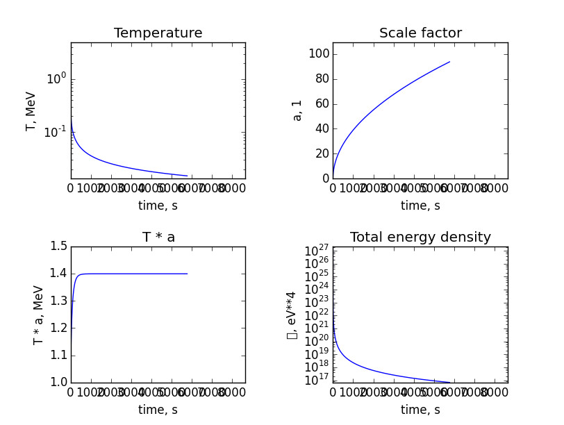
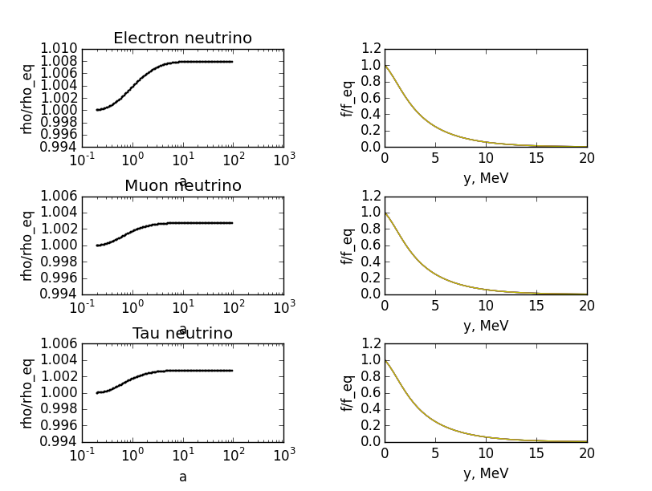

{kind=link}
{kind=link}
{kind=link}
{kind=link}
{kind=link}
Standard Model BBN test
 
This test checks that in the universe filled with photons, electrons and neutrinos:
- $a * T$ is not conserved by a factor around
1.401and precise details of this process - neutrino non-equilibrium corrections reproduce the results of the Dolgov-Hansen-Semikoz papers
import os
import numpy
import matplotlib
from plotting import plt
from particles import Particle
from library.SM import particles as SMP, interactions as SMI
from evolution import Universe
from common import CONST, UNITS, Params, GRID
params = Params(T_initial=5. * UNITS.MeV,
T_final=0.015 * UNITS.MeV,
dx=1e-5 * UNITS.MeV)
universe = Universe(params=params,
logfile='tests/standard_model_bbn/log.txt')
photon = Particle(params=params, **SMP.photon)
electron = Particle(params=params, **SMP.electron)
neutrino_e = Particle(params=params, **SMP.neutrino_e)
neutrino_mu = Particle(params=params, **SMP.neutrino_mu)
neutrino_tau = Particle(params=params, **SMP.neutrino_tau)
universe.particles += [
photon,
electron,
neutrino_e,
neutrino_mu,
neutrino_tau,
]
universe.interactions += [
SMI.neutrino_self_scattering(neutrino_e),
SMI.neutrino_self_scattering(neutrino_mu),
SMI.neutrino_self_scattering(neutrino_tau),
SMI.neutrino_inter_scattering(neutrino_e, neutrino_mu),
SMI.neutrino_inter_scattering(neutrino_mu, neutrino_tau),
SMI.neutrino_inter_scattering(neutrino_tau, neutrino_e),
SMI.neutrino_pair_flavour_change(neutrino_e, neutrino_mu),
SMI.neutrino_pair_flavour_change(neutrino_mu, neutrino_tau),
SMI.neutrino_pair_flavour_change(neutrino_tau, neutrino_e),
SMI.neutrinos_to_electrons(g_L=CONST.g_R+0.5, electron=electron, neutrino=neutrino_e),
SMI.neutrinos_to_electrons(g_L=CONST.g_R-0.5, electron=electron, neutrino=neutrino_mu),
SMI.neutrinos_to_electrons(g_L=CONST.g_R-0.5, electron=electron, neutrino=neutrino_tau),
SMI.neutrino_electron_scattering(g_L=CONST.g_R+0.5, electron=electron, neutrino=neutrino_e),
SMI.neutrino_electron_scattering(g_L=CONST.g_R-0.5, electron=electron, neutrino=neutrino_mu),
SMI.neutrino_electron_scattering(g_L=CONST.g_R-0.5, electron=electron, neutrino=neutrino_tau),
]
universe.graphics.monitor(particles=[
neutrino_e,
neutrino_mu,
neutrino_tau
])
universe.evolve()
universe.graphics.save(__file__)plt.figure(9)
plt.title('Figure 9')
plt.xlabel('MeV/T')
plt.ylabel(u'aT')
plt.xscale('log')
plt.xlim(0.5, UNITS.MeV/universe.params.T_final)
plt.xticks([1, 2, 3, 5, 10, 20])
plt.axes().get_xaxis().set_major_formatter(matplotlib.ticker.ScalarFormatter())
plt.plot(UNITS.MeV / numpy.array(universe.data['T']), numpy.array(universe.data['aT']) / UNITS.MeV)
plt.show()
plt.savefig(os.path.join(folder, 'figure_9.png'))plt.figure(10)
plt.title('Figure 10')
plt.xlabel('Conformal momentum y = pa')
plt.ylabel('f/f_eq')
plt.xlim(0, 20)
f_e = neutrino_e._distribution
feq_e = neutrino_e.equilibrium_distribution()
plt.plot(GRID.TEMPLATE/UNITS.MeV, f_e/feq_e, label="nu_e")
f_mu = neutrino_mu._distribution
feq_mu = neutrino_mu.equilibrium_distribution()
plt.plot(GRID.TEMPLATE/UNITS.MeV, f_mu/feq_mu, label="nu_mu")
f_tau = neutrino_tau._distribution
feq_tau = neutrino_tau.equilibrium_distribution()
plt.plot(GRID.TEMPLATE/UNITS.MeV, f_tau/feq_tau, label="nu_tau")
plt.legend()
plt.draw()
plt.show()
plt.savefig(os.path.join(folder, 'figure_10_full.png'))
plt.xlim(0, 10)
plt.ylim(0.99, 1.06)
plt.draw()
plt.show()
plt.savefig(os.path.join(folder, 'figure_10.png'))Distribution functions arrays
distributions_file = open(os.path.join(folder, 'distributions.txt'), "w")
numpy.savetxt(distributions_file, (f_e, feq_e, f_e/feq_e), header=str(neutrino_e),
footer='-'*80, fmt="%1.5e")
numpy.savetxt(distributions_file, (f_mu, feq_mu, f_mu/feq_mu), header=str(neutrino_mu),
footer='-'*80, fmt="%1.5e")
numpy.savetxt(distributions_file, (f_tau, feq_tau, f_tau/feq_tau), header=str(neutrino_tau),
footer='-'*80, fmt="%1.5e")
distributions_file.close()